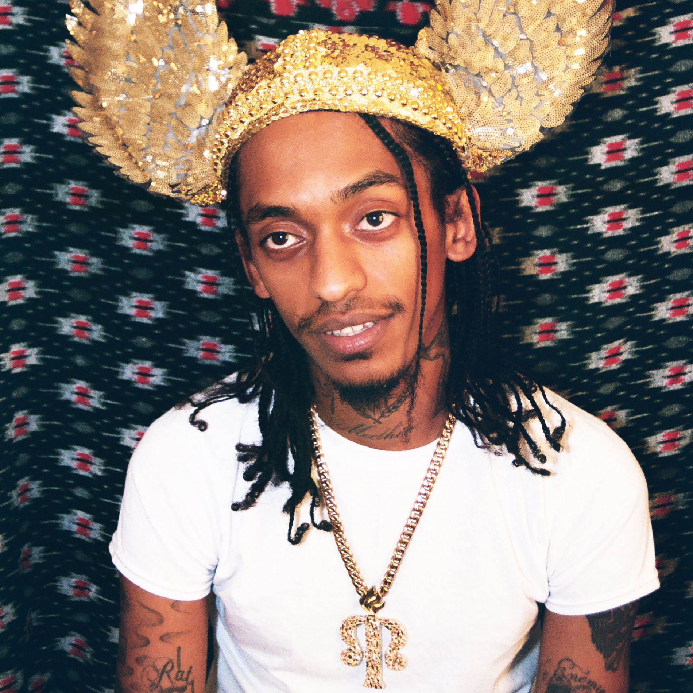

A simple understanding of a subculture is that it is a set of rules or customs followed by a select few individuals. It is not law.
A sonic representation of a subculture would be the rabbit hole that comes with following a particular artist. If you know ScHoolboy Q, you've definitely heard of Black Hippy; Griselda will have you stanning Westside Gunn, Benny the Butcher, and Conway the Machine, and so forth.
If you listen to Earl Sweatshirt, the rules of subculture dictate that you'll be familiar with MIKE, Niontay, El Cousteau, and Sideshow, who's the focal point of this article.
2026 has been an exceptional year for hip-hop, and we're not even through the year. We've had offerings from household names like J. Cole, A$AP Rocky, Isaiah Rashad and Drake, just to name a few in the mainstream realm. The underground scene has also delivered projects that remain at the very top of our playlists. Free Party dropped Look We're Flying; Rome Streetz dropped Sock It 2 My Pocket, and that is us being very modest with the projects released this year.
Sideshow's Tigray Funk is our current MVP for album of the year. Our list is fluid, and we shall address the best albums of 2026 in a future article. Tigray Funk is one of those projects that you can enjoy in different ways. It is divided into four discs that never feel long. Each disc feels like a different session, with the Tigrayan rapper hosting a rap session filled with tales of his lean obsession and state of mind, all set against production and features from familiar faces such as El Cousteau, Niontay, and Surf Gang. One can consume the project in the traditional form of listening to each track as it appears, but we've found that the four discs have standout tracks, allowing each listener to find their own way of consuming the 32-song-long project.
The album runs for just over an hour, but it doesn't feel that long. The raps are simple and reflective of the straight-to-the-point sound that we've become accustomed to from 2020s rap songs. It has bangers, skits, and those jams that you keep playing without skipping. The cover art may mislead you into believing that you are not listening to what many consider to be the album of the year, mainstream or otherwise.
Tigray Funk is not merely an allusion to a party but highlights his allegiance to Tigray, where he was born, to the extent that he boldly expresses his pride in the region, considering the challenges it faces with the war with Ethiopia. All of this is mirrored by his own daily challenges as a Black American and the prejudices he experiences because of this. The Ethiopian samples reimagined through minimalistic, drumless, percussive beats are bound to introduce many to Ethiopian music.
While we haven't crowned our album of the year yet, it will take a Herculean effort to top Tigray Funk. It has topped many of our charts and remains in our rotation.
Recommended Tracks
- Kill From The Heart
- Martyr Most High
- Almost Famous
- CCP Like Oto
- Pussy Riot!